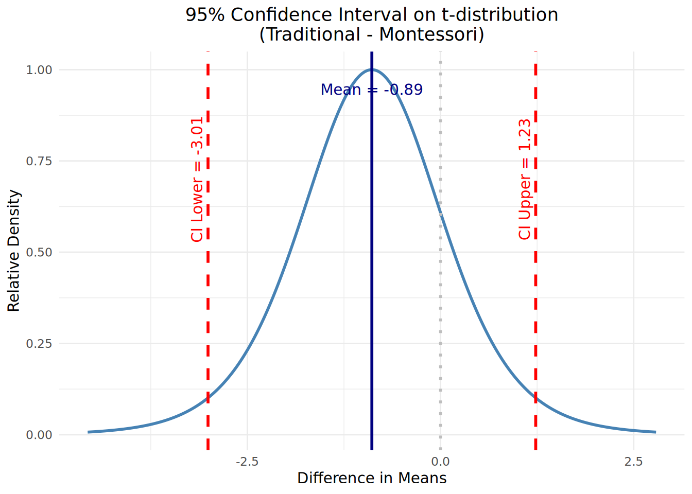
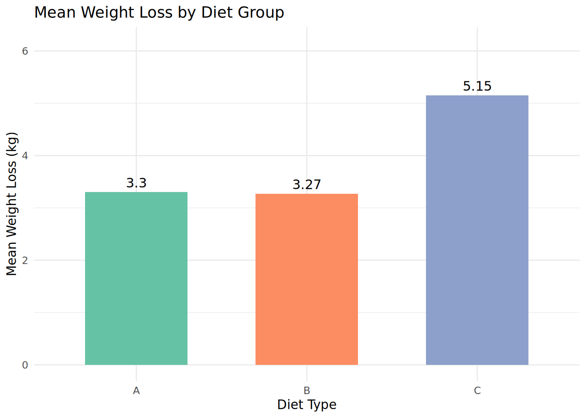

# Q7 part a# Calculate the probability of getting between 3 and 6 successes # in a binomial distribution with n = 10 trials and p = 0.5 success probability# P(3 ≤ X ≤ 6) = P(X ≤ 6) - P(X ≤ 2)pbinom(6, size =10, prob =0.5) -pbinom(2, size =10, prob =0.5)
[1] 0.7734375
Question 3(b)
Sample size calculation for a follow-up trial:
You want to detect a 0.5-unit difference in mean antibody response with a standard deviation of 1.5, 90% power, and a two-sided test.
We use the sample size formula for comparing two independent means:
\[\alpha = 0.05\] (significance level for a two-sided test ⇒ 95% confidence)
\[\text{Power} = 90\% \Rightarrow \beta = 0.10\]
Although the study is powered at 90%, we still use a 95% confidence level for hypothesis testing (i.e., \[\alpha = 0.05\]), which is standard practice in clinical trials and reflected in the formula above.
From the standard normal table (using R):
# Z-score for 95% confidence level (two-sided test)qnorm(1-0.05/2) # 1.959964
[1] 1.959964
# Z-score for 90% powerqnorm(0.90) # 1.281552
[1] 1.281552
Plugging into the formula:
We substitute the values into the formula for sample size:
Answer:
You would need approximately 95 participants per group to detect a 0.5-unit difference in mean antibody response with 90% power, using a two-sided test at the 0.05 significance level.
Question 6(b)
Calculate the p-value for the paired t-test:
# Define test scores for each twintraditional <-c(78, 85, 67, 93, 72, 60, 71, 49, 75)montessori <-c(81, 83, 71, 90, 73, 58, 75, 52, 75)# Run paired t-testt_test_result <-t.test(traditional, montessori, paired =TRUE)# Output t-statistic and p-valuet_test_result$statistic # t-value
# Required packageslibrary(ggplot2)# Extract CI values and degrees of freedomci_low <- t_test_result$conf.int[1]ci_high <- t_test_result$conf.int[2]mean_diff <- t_test_result$estimate # mean of the differencesdf <- t_test_result$parameter # degrees of freedomt_crit <-qt(0.975, df)# Estimate standard error from CI width and t critical valuestd_err <- (ci_high - mean_diff) / t_crit# Generate t-distributionx_vals <-seq(mean_diff -4*std_err, mean_diff +4*std_err, length.out =500)y_vals <-dt((x_vals - mean_diff) / std_err, df)# Normalize y for aestheticsy_vals <- y_vals /max(y_vals)# Create data frameplot_data <-data.frame(x = x_vals, y = y_vals)# Plot with labeled CI and meanggplot(plot_data, aes(x = x, y = y)) +geom_line(color ="steelblue", linewidth =1) +geom_vline(xintercept = mean_diff, color ="navy", linetype ="solid", linewidth =1) +geom_vline(xintercept = ci_low, color ="red", linetype ="dashed", linewidth =1) +geom_vline(xintercept = ci_high, color ="red", linetype ="dashed", linewidth =1) +geom_vline(xintercept =0, color ="gray", linetype ="dotted", linewidth =1) +annotate("text", x = mean_diff, y =0.9, label =paste0("Mean = ", round(mean_diff, 2)), color ="navy", vjust =-1) +annotate("text", x = ci_low, y =0.7, label =paste0("CI Lower = ", round(ci_low, 2)), color ="red", angle =90, vjust =-0.5) +annotate("text", x = ci_high, y =0.7, label =paste0("CI Upper = ", round(ci_high, 2)), color ="red", angle =90, vjust =-0.5) +labs(title ="95% Confidence Interval on t-distribution\n(Traditional - Montessori)",x ="Difference in Means",y ="Relative Density" ) +theme_minimal() +theme(plot.title =element_text(hjust =0.5),legend.position ="none" )

Question 4
We tested whether mean weight loss differed across the three diet groups using Welch’s ANOVA, which adjusts for unequal variances between groups.
# Load dataset using base Rdiet_data <-read.csv("diet.csv")# Calculate weight lossdiet_data$weight_loss <- diet_data$initial.weight - diet_data$final.weight# Perform Welch’s ANOVAwelch_result <-oneway.test(weight_loss ~ diet.type, data = diet_data, var.equal =FALSE)# Display the resultwelch_result
One-way analysis of means (not assuming equal variances)
data: weight_loss and diet.type
F = 5.2693, num df = 2.00, denom df = 48.48, p-value = 0.008497
# Load required packagelibrary(ggplot2)# Load the datasetdiet_data <-read.csv("diet.csv")# Calculate weight lossdiet_data$weight_loss <- diet_data$initial.weight - diet_data$final.weight# Calculate mean weight loss by diet groupmean_table <-aggregate(weight_loss ~ diet.type, data = diet_data, FUN = mean)# Rename columns for claritycolnames(mean_table) <-c("Diet Type", "Mean Weight Loss (kg)")# Display the tablemean_table
Diet Type Mean Weight Loss (kg)
1 A 3.300000
2 B 3.268000
3 C 5.148148
# Plot with colored bars and labelsggplot(mean_table, aes(x =`Diet Type`, y =`Mean Weight Loss (kg)`, fill =`Diet Type`)) +geom_bar(stat ="identity", width =0.6, show.legend =FALSE) +geom_text(aes(label =round(`Mean Weight Loss (kg)`, 2)),vjust =-0.5, size =4, color ="black") +scale_fill_manual(values =c("A"="#66c2a5", "B"="#fc8d62", "C"="#8da0cb")) +labs(title ="Mean Weight Loss by Diet Group",x ="Diet Type",y ="Mean Weight Loss (kg)" ) +theme_minimal() +ylim(0, max(mean_table$`Mean Weight Loss (kg)`) +1)

# Run pairwise t-tests with Holm correction (Welch's method)pairwise_results <-pairwise.t.test(diet_data$weight_loss, diet_data$diet.type,p.adjust.method ="holm",pool.sd =FALSE)
# Load base R-compatible toolslibrary(DT)# Run pairwise t-tests with Holm correction (Welch's method)pairwise_results <-pairwise.t.test(diet_data$weight_loss, diet_data$diet.type,p.adjust.method ="holm",pool.sd =FALSE)# Convert to a data frame for displaypval_matrix <- pairwise_results$p.valuepval_df <-as.data.frame(as.table(pval_matrix))colnames(pval_df) <-c("Group 1", "Group 2", "Holm-adjusted p-value")# Remove rows with missing values (e.g., B vs B)pval_df <-na.omit(pval_df)# Display DT table (just the body)datatable(pval_df,rownames =FALSE,options =list(dom ='t', # show only table bodypageLength =5))
# Define probability of false positivep_fp <-1-0.859# = 0.141# Compute probability of at least 2 false positives in 5 testsp_at_least_2 <-1-pbinom(1, size =5, prob = p_fp)p_at_least_2
[1] 0.1484515
The result is approximately 0.148, meaning there is a 14.8% chance that at least 2 out of 5 people without malaria would receive a false positive result.